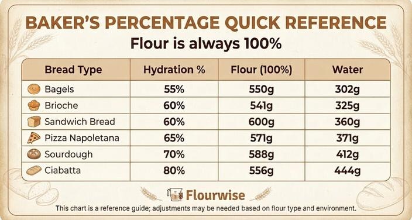

I still remember the day I discovered baker's percentage.
I was maybe 26, working the overnight shift at a Charleston hotel, scaling a brioche recipe from 12 loaves to 200. The recipe was written in a language I didn't fully understand—"flour 100%, water 65%, yeast 2%, salt 2%, butter 40%."
I stared at the recipe card for a good five minutes. Flour 100%? That doesn't make sense. Flour can't be 100% of itself.
Then it clicked.
The percentages weren't measuring the whole recipe. They were measuring everything relative to the flour. Flour is always 100%. Every other ingredient is a percentage of the flour weight.
That realization changed everything. Suddenly, scaling wasn't guesswork. It was ratios. Beautiful, predictable, infinitely scalable ratios.
Let me show you what I mean.
What Is Baker's Percentage? (The One‑Minute Explanation) Baker's percentage (also called baker's math) is a way of writing recipes where flour is always 100% and every other ingredient is expressed as a percentage of the flour weight.
Example: A simple bread recipe might look like this:
Bread flour: 100% (500g)
Water: 65% (325g)
Yeast: 1% (5g)
Salt: 2% (10g)
See what happened? The water is 65% of the flour weight. The yeast is 1%. The salt is 2%. The flour is the anchor that everything else hangs onto.
Why does this matter? Because if you change the amount of flour, everything else changes proportionally. The ratios stay exactly the same.
Double the flour to 1,000g? Water becomes 650g. Yeast becomes 10g. Salt becomes 20g. The recipe is identical in proportion.
That's the magic of baker's percentage. It's scaling built into the recipe itself.
Why Every Cook Should Know This (Not Just Bakers) I used to think baker's percentage was only for bread. Then I started applying it to everything.
Cookies? Yes. Flour is 100%. Sugar might be 80%. Butter 70%. Eggs 40%. Chocolate chips 100%. Suddenly you can compare two cookie recipes side by side and see exactly why one spreads more (too much butter) or tastes sweeter (too much sugar).
Cakes? Yes. Flour 100%. Sugar 100% (classic pound cake ratio). Butter 100%. Eggs 100%. That's a pound cake—equal weights of everything.
Pancakes? Yes. Flour 100%. Milk 120%. Eggs 40%. Butter 20%. Sugar 10%. You can scale it up for a crowd in seconds.
Even savory dishes? Sort of. You can use a similar logic—choose a base ingredient (rice, pasta, potatoes) as 100%, then express everything else as a percentage. It's not traditional baker's percentage, but the math works the same.
Once you learn this system, you stop seeing recipes as lists of ingredients. You see them as relationships. And relationships are easy to scale.
Step 1: Choose Your Flour (The 100% Anchor) In baker's percentage, the flour is always the reference point. Always. No exceptions.
Total flour weight = 100%
If a recipe has multiple flours (whole wheat, rye, spelt), you add them together. That total is 100%.
Example: A sourdough with 400g bread flour and 100g whole wheat flour = 500g total flour = 100%.
Then you calculate everything else as a percentage of that 500g.
Why flour? Because flour is the structural backbone of most baked goods. Changing the flour changes everything. Everything else is just flavor, moisture, or leavening.
Step 2: Calculate Water Percentage (Hydration Ratio) This is the most important percentage in bread baking.
Hydration = (Water weight ÷ Flour weight) × 100%
Example: 500g flour, 325g water. 325 ÷ 500 = 0.65 × 100% = 65% hydration.
What different hydration ratios mean:
Hydration Dough Texture Best For 60-65% Firm but workable Sandwich bread, dinner rolls 75-85% Very sticky, wet, requires technique Ciabatta, focaccia 85%+ Almost batter-like, needs high‑skill handling Pizza bianca, certain rustic loaves Pro tip: If you're new to bread, start at 65% hydration. It's forgiving. It won't glue itself to your hands. You can work your way up.
Step 3: Add Yeast, Salt, Sugar, and Fat These are all percentages of the flour weight.
Typical ranges:
Ingredient Percentage Range Notes Yeast (fresh) 1-3% 2% is standard for sandwich bread Yeast (instant dry) 0.5-1.5% Less than fresh because it's more concentrated Salt 1.8-2.2% 2% is the sweet spot for flavor and gluten development Sugar 0-15% 0% for savory bread, 10-15% for sweet doughs (brioche, cinnamon rolls) Fat (butter, oil) 0-40% 0% for lean dough, 20-40% for enriched dough Example: A standard sandwich bread with 500g flour:
Water: 65% = 325g
Yeast (instant dry): 1% = 5g
Salt: 2% = 10g
Sugar: 5% = 25g
Butter: 5% = 25g
Why percentages matter: If you see a recipe with 2% salt, you know it's well‑seasoned. If you see 0.5% salt, you know it's under‑salted and the bread will taste flat.
Step 4: Calculate Total Dough Weight This is where baker's percentage gets really useful.
Total dough weight = Flour weight + (Flour weight × Sum of all other percentages)
Example: 500g flour. Percentages: water 65% (325g), yeast 1% (5g), salt 2% (10g), sugar 5% (25g), butter 5% (25g).
Sum of percentages = 65 + 1 + 2 + 5 + 5 = 78%
Total dough weight = 500 + (500 × 0.78) = 500 + 390 = 890g
Why this matters: If you know how much your final dough should weigh (for pan size or portioning), you can work backwards.
Working backwards: Desired dough weight = 1,200g. Flour weight = 1,200g ÷ (1 + sum of percentages) Sum of percentages = 78% = 0.78 1 + 0.78 = 1.78 Flour weight = 1,200 ÷ 1.78 = 674g
Then multiply each percentage by 674g to get your ingredient weights.
That's the power of baker's percentage. You can start from either end—flour or total weight—and the math just works.
Step 5: Scale Up or Down (Keep the Percentages) This is the step that makes people fall in love with baker's math.
To scale a recipe, you only change the flour weight. Everything else follows automatically.
Original recipe (500g flour):
Water: 65% → 325g
Yeast: 1% → 5g
Salt: 2% → 10g
Scaled to 1,000g flour (2x):
Water: 65% → 650g
Yeast: 1% → 10g
Salt: 2% → 20g
Scaled to 250g flour (0.5x):
Water: 65% → 162.5g
Yeast: 1% → 2.5g
Salt: 2% → 5g
The percentages never change. Only the flour weight changes. That's it.
This is why professional bakers use baker's percentage. They can scale a recipe from 10 loaves to 1,000 loaves by changing one number: the flour weight.
A Complete Example (From Recipe to Percentages) Let me take a real recipe and convert it to baker's percentage. This is my go‑to sourdough.
Original recipe (2 loaves):
Bread flour: 800g
Water: 560g
Sourdough starter (100% hydration): 160g
Salt: 16g
Step 1: Total flour weight The starter contains flour and water. At 100% hydration, 160g starter = 80g flour + 80g water. Total flour = 800g (added) + 80g (from starter) = 880g
Step 2: Total water weight Water added: 560g + water from starter: 80g = 640g
Step 3: Calculate percentages
Water: 640g ÷ 880g = 0.727 = 72.7% hydration
Starter: 160g ÷ 880g = 0.182 = 18.2% (this is the preferment percentage)
Salt: 16g ÷ 880g = 0.018 = 1.8%
Baker's percentage version of this recipe:
Flour: 100% (880g total, but you'd add 800g plus starter)
Water: 72.7% (640g)
Starter: 18.2% (160g)
Salt: 1.8% (16g)
Now I can scale this to any size. Want 5 loaves? Choose a new flour weight, multiply every percentage by that weight, and you're done.
The Tool That Converts Everything For You I built the Baker's Percentage Converter because doing these calculations by hand is tedious. Not hard—just tedious.
It's like having a calculator that speaks baker's math.
Preferments (Adding Starter or Poolish) Once you understand basic baker's percentage, you can add preferments—pre‑fermented doughs that add flavor and structure.
Common preferments:
Poolish: Equal weights flour and water, tiny amount of yeast. Typically 20-30% of total flour.
Bigas: Stiffer preferment, less water. 20-40% of total flour.
Sourdough starter: 100% hydration (equal flour and water). 10-30% of total flour.
How to calculate with preferments:
Let's say you want a sourdough with 20% starter (as a percentage of total flour).
Total flour = 1,000g Starter = 20% of 1,000g = 200g At 100% hydration, starter contains 100g flour + 100g water.
Remaining flour to add = 1,000g total flour - 100g flour from starter = 900g Remaining water = target hydration (70% = 700g) - 100g water from starter = 600g
Final ingredient list:
Flour added: 900g
Water added: 600g
Starter: 200g
Salt: 2% of 1,000g = 20g
See how that works? The preferment is just part of the percentages. You subtract its flour and water from the total before measuring.
The Cheat Sheet (Print This) Baker's Percentage for Common Bread Types:
Bread Type Hydration Salt Yeast (instant) Fat Sugar Bagel 55-58% 2% 1% 0% 0-5% Sandwich bread 65-70% 2% 1-1.5% 5% 5% Sourdough 70-75% 2% 0% (starter 20%) 0% 0% Ciabatta 75-85% 2% 1% 3% 0% Focaccia 75-80% 2.5% 1% 5% 0% Pizza dough 60-65% 2% 1% 2% 0% Brioche 50-60% 2% 2% 40% 15% Pretzel 55-60% 2% 1% 0% 0% How to use this chart: Choose a flour weight. Multiply each percentage by that weight. That's your recipe.
Example for 500g flour, sandwich bread:
Water: 65% = 325g
Salt: 2% = 10g
Yeast: 1.2% = 6g
Fat: 5% = 25g
Sugar: 5% = 25g
Total dough weight = 500 + (325+10+6+25+25) = 500 + 391 = 891g
The One Mistake Everyone Makes When people first learn baker's percentage, they try to calculate everything as a percentage of the total weight instead of the flour weight.
Wrong: Water is 65% of total dough weight. Right: Water is 65% of flour weight.
In a dough with 500g flour and 325g water, total weight is 825g.
Wrong calculation: 325 ÷ 825 = 39% water
Right calculation: 325 ÷ 500 = 65% water
That 39% vs 65% is a huge difference. If you accidentally use 39% hydration, your dough will be stiff, dry, and unworkable.
The memory trick: Flour is the only 100%. Everything else is measured against flour, not against the total.
Why I Wish I Learned This Years Earlier When I was a pastry chef, I scaled recipes by instinct. I knew that a brioche needed a certain feel—soft, buttery, slightly tacky. But I couldn't explain the ratios.
Baker's percentage gave me a language for what I already knew.
Now when a student asks me, "Why did my bread turn out dense?" I can answer: "Your hydration was probably too low. Check your math. You should be around 65-70%."
When a reader emails me, "How do I scale this cookie recipe?" I can say: "Keep the flour as 100%. Everything else stays the same percentage."
Baker's percentage turns baking from an art into a science. Not in a cold, soulless way. In a reliable, repeatable, you-can-do-this way.
Once you learn it, you'll never look at a recipe the same way again.
Your First Practice Try this when you have 30 minutes.
Pick a recipe you know well—maybe chocolate chip cookies or banana bread.
Write down all the ingredient weights in grams.
Identify the flour weight. That's 100%.
Divide every other ingredient by the flour weight and multiply by 100.
Write down the percentages.
Now look at the percentages. What's the sugar percentage? The butter percentage? The egg percentage?
You'll start to see patterns. Most chocolate chip cookie recipes have sugar around 70-80% of flour, butter around 60-70%, eggs around 20-30%.
Once you know those patterns, you can create your own recipes. Just pick the percentages and multiply by your flour weight.
That's not baking. That's math. Beautiful, delicious math.
— Olivia Hartmann, Culinary Math Educator
P.S. The first time I taught baker's percentage to a class, a student raised her hand and said, "This is the first time math has ever made me hungry." I think about that comment every time I explain percentages. She was right. Math should make you hungry.